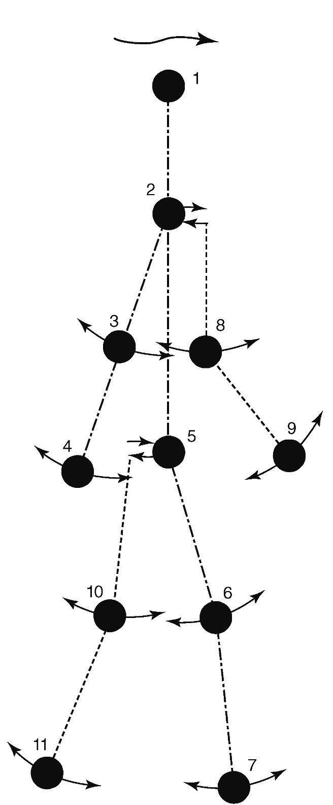

婴儿的环境中有很多物体会移动并发出声音，但其中只有一部分有主体性——能自发地运动。例如，宠物会移动、发出声音，并做有趣的事。车也会动、发出声音，但并不能自己决定何时开始移动。事实上，和动作有关的所有物理线索都显示了某个东西是否有主体性。婴儿在发展的早期就能发觉这些线索。
一组相关的系列实验采用了“光点”演示。光点演示开始是利用人来制作的。实验员将小小的光点粘在主要的关节和头部，然后拍摄人们在黑暗中穿着黑衣服移动（见图6）。这些光点的运动使得观看影片的成人能够看出人们在走路、跳舞、做俯卧撑或骑自行车。甚至性别也可以通过光点的运动显示出来。以婴儿为对象的光点实验显示，婴儿也能够区分走路和随机的移动，还能分辨头下脚上的走路。他们还可以区分生物和非生物种类，例如狗和车。在狗和车的实验中，一些3个月大的婴儿看到了狗和车的照片，这些照片提供了丰富的视觉特征信息。婴儿可以很容易地区分这两种照片。另外一些婴儿看到的是车的运动或狗的运动。尽管没有其他的视觉特征，这些婴儿同样可以成功地区分狗和车。因此，运动的类型是区分生物和人造物（例如车）的一条重要线索。

图6 一个走路的人在做光点演示
另一个方法利用“依次触摸”来表明，婴儿可以区分“自然物”和人造物。可以坐起来并操纵物体的婴儿在触摸东西时并不是不加区分的。相反，他们的触摸是有条理的。在一次演示中，12个月大的婴儿拿到了一大套玩具，其中一半是玩具汽车，另一半是玩具动物。这些婴儿依次触摸同一类别玩具的次数非常多。甚至当玩具的外形很相似时，同样的“依次触摸”现象也出现了。在一项研究中，实验员制作了和玩具家具外形相同的木质玩具动物。玩具家具上绘制了像眼睛一样的图案。但即便如此，婴儿对不同玩具的表现还是不同的。例如，如果婴儿拿到的是一系列的玩具动物，然后再拿到一个家具玩具或一个玩具动物，他们会花更长的时间来研究玩具家具，而不是和家具形状相同的动物。这类实验说明，婴儿可以根据已有的知识来将物体分类。